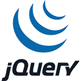
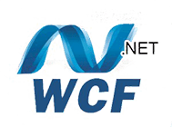
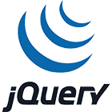
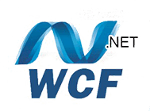

Projet « Outil d´analyses et de catastrophes »
L´objectif est de fournir aux entités d´un grand groupe d´assurance ainsi qu´aux réassureurs des outils logiciels qui leur permettent d´estimer l´exposition aux risques de catastrophes naturelles de tout leur portefeuille.
Teamweb réalise un site web qui centralise le système de validation pour analyser puis valider les données de réassurance venant des entités du groupe et des réassureurs dans le monde entier.
Durée : 18 H/mois.
Environnement technique : ASP.Net, WPF, WCF, SQL Server 2008, Ajax, Jquery, Multithread, XML.
 



Projet « Guichet virtuel »
L´objectif du développement de ce portail en langue Arabe et en Français est de permettre aux différents utilisateurs (juristes, avocats, clients) d´obtenir des informations auprès des tribunaux.
Réalisé par Teamweb, il comporte deux parties :
Une partie Back office avec un module d´authentification sécurisée et de gestion de configuration d´un outil (middlegen) de génération de fichier supportant la langue arabe.
Une partie Front office avec un module de génération de documents sous format PDF en Français et en Arabe.
Durée : 14H/mois.
Environnement technique : Java, JSP, Servlet, XML, Struts, Hibernate, Netbeans, PowerDesigner, CVS, Ireport.
Projet « Simulation de crédit »
L´objectif de ce projet est de construire un site WEB qui permet aux clients de l´établissement de crédit de gérer leurs comptes par Internet (particuliers et partenaires commerciaux).
Ce site WEB leur permet de gérer leurs plans financiers par Internet tels que :
-Demandes de prêts immobiliers,
-Simulations des taux,
-Coûts des mensualités,
Puis de faire valider par les services internes le dossier de l´emprunteur.
Durée : 10H/Mois.
Environnement technique : ASP.Net, Ajax, Jquery, SQL Server 2008, IIs, Multithread, WCF, XML.
Projet « Ecobase »
L´objectif de ce projet est d´une part de maintenir et de faire évoluer une base historique des données des contreparties (rating, CDS, Etc..) et des indicateurs macro-économiques (PIB, Chômage Etc..) et d´autre part de donner la possibilité aux experts de créer des scénariis de stress économique.
Durée : 14H/Mois
Environnement technique : C#, NHibernate, Spring.Net, Services WCF, ASP MVC 3 Razor, jqGrid Oracle 10G.
Projet « Web Services pour salles de marché »
L´objectif de ce projet est de développer les Web Services annexes à un système de téléphonie en salle de marché permettant aux traders :
-De suivre les communications téléphoniques,
-De noter la présence des utilisateurs du système,
-De superviser les alarmes et les pannes,
-D´interroger et de synchroniser les annuaires LDAP.
Durée : 24H/mois.
Environnement technique : Java, Web Services, SOAP, XML, Subversion.
Projet « Astro »
Durée : 7H/Mois.
Environnement technique : Java, Jsp, Eclipse, ANT, Junit, Jmeter, Linux, MySql.

Projet « TraM »
L´objectif de ce projet consiste en le développement d´un système de Tracking Marketing ciblé pour un site d´informations financières en ligne permettant le suivi des actions des utilisateurs (la recherche, l´analyse et le stockage des traces du suivi en communication avec une base OLTP d´une part et le développement d´un site WEB d´administration des données (gestion de mots-clés, interface d´envoi de mails personnalisés à une liste pré-établie) en base OLTP.
Durée : 7H/Mois.
Environnement technique : Java, Jsp, Eclipse, ANT, Junit, Jmeter, Linux, MySql.
Projet « Internet Mobile »
L´objectif est de développer les outils et progiciels informatiques on line de la société de diffusion de publicités sur Internet Mobile, de mesure de performance, de création de mini sites et d´applications mobiles tout en garantissant l´évolutivité de ces outils et en veillant en permanence à l´adéquation des outils avec les besoins des clients.
Durée : 20H/Mois
Environnement technique : PHP5, Framework Zend, javascript, XML, SQL, Ajax, plate-forme IPhone/ANDROID, Méthode AGILE.
Projet « Administration de bases de données Oracle »
- Projet principal : sécurisation et haute disponibilité de la plateforme EAI (Webmethod V7) avec une architecture RAC 10G.
- Rédaction de la documentation relatif à l’administration du RAC 10G (installation, gestion des services, de l’ASM et du backup rman).
- Définition des tests techniques : robustesse, stress, failover.
- Réalisation d’une simulation d’un DRP.
- Optimisation des paramètres d’instance.
- Administration de 300 bases Oracle dont 50 en production et 2 dataguard physical (8i et 9i) : installation, configuration, backup, duplication, monitoring, gestion des incidents.
Durée : 18 mois.
ENVIRONNEMENT TECHNIQUE : ORACLE 8I, 9I ET 10GR2, RAC, asm, dataguard, rman , OEM 10G, TKPROF, QUEST CENTRAL, SQL plus, Oracle SQL Developper Toad, linux, RHEL 5, AIX, SOLARIS, OCFS2
Projet « Administration de bases de données Oracle »
- Administration générale et maintien en condition opérationnelle des environnements confiés : production, preprod, isoprod, UAT, développement : surveillance et gestion des espaces disques via ASM, consommation CPU/mémoire, respect de la politique de sécurité, haute disponibilité dataguard.
- Préparation et réalisation de campagnes de stabilisation des performances : surveillance des remontées du SQL Advisor, surveillance requetage des bases de données, analyse des plans d’exécution soumis par la maintenance automatique Oracle, analyse quotidienne des rapports AWR, tuning DDL et DML,
- Préparation et réalisation de la migration de l’ensemble des bases Oracle 11gR1 vers Oracle 11gR2, reconstruction physical standby dataguard.,
- Définition de la politique de backup, migration backup depuis SAN vers NFS type NetApp, restauration de bases de données via restore RMAN ou flashback database (point in time,SCN).
Durée : 12 mois
Environnement technique : ORACLE 11GR2 (rdbms, RAC, asm, dataguard, rman), Linux OEL x86 64bit 5.6, OEM12C Cloud Control, Oracle SQL Developper 3, ksh/sh/bash
Projet « Mise en place d’un cadre normatif pour une offre de services interne sur SQL Server 2008 et support aux équipes sur les thèmes suivants : »
- Moyen d’accès par environnement : Définition des éléments et droits nécessaires pour accéder à des environnements de développement, intégration, pré production et production.
- Monitoring : Suivi et alertes types sur le Moniteur système et l’Agent SQL Server. Audit : Création de rapports types à partir des rapports standard, personnalisés et de performance dashboard pour valider la qualité des systèmes.
- Conception de bases de données : Création de documents de conception, de Check-list et de PTI pour implémenter des bases de données.
- Sauvegarde / Restauration : Procédure de définition des modes de sauvegardes.
- Capacity Planning : Procédures de mise en place de collecte de données à partir du Moniteur système et du Générateur de Profils pour permettre une montée en charge de SQL Server.
Durée : 8 mois.
Environnement technique : WINDOWS SERVER 2008, SQL SERVER 2008
Projet « Ingénierie système »
1-Evolution de l’infrastructure
- Migration de l’ensemble des accès Internet vers une seule infrastructure sécurisée,
- Migration de la plateforme VMware Virtual Center 3.5 vers vSphere 4,
- Migration des magasins sous NT4 vers Windows 2008 Server (70 sites),
- Préparation de la migration du domaine central AD 2003 vers AD 2008.
2-Administration et exploitation
- Gestion de l’environnement de production de l’infrastructure du siège et des magasins,
- Support aux équipes de techniciens hotline et de proximité : mise en place d’outils pour l’administration, mise en place de procédures d’exploitation.
Durée : 18 mois.
Environnement technique :Windows NT à 2008 Server (200 serveurs), Windows XP et Seven (5000 utilisateurs), réseau Cisco / Alcatel / Bluecoat ProxySG, datacenters, VMware vSphere, SAN et Filers NetApp, McAfee EPO
Projet « Migration Active Directory à l’échelle mondiale »
- Installation et mise en production des Contrôleurs de domaines.
- Délégations de l’administration Active Directory aux IT locaux.
- Gestion et Adaptation des GP- , scripts d’ouvertures de session selon les besoins du pays.
- Accompagnement aux équipes IT à la migration des utilisateurs et postes de travail.
- Rédaction de documents d’exploitation.
- Support de Niveau 3 aux IT pays.
Durée : 18 mois.
Environnement Technique : Windows 2003 Server, 2008 Server et Storage, XP, Vista, Seven, ESXi, Vsphère, Exchange 2010, Domino, Novell e-Guide, Safe Guard Easy et Enterprise 5.60, Active Directory, DRA NetIQ, GPA NetIQ, Trend Micro, EMC Networker, WSUS, Mcafee Foundstone, CRM, Sharepoint, DameWare, GLPI, OCS inventory, Lansweeper.
Projet « Administration système et réseau WINDOWS »
- Administration et Gestion des incidents niveaux 2 et 3 sur environnement de Production,
- Mise en oeuvre des accès externes sécurisés via Wallix Admin Bastion,
- Migration des Serveurs d’Impression,
- Mise en production des applications en coordination avec les équipes projet,
- Finalisation de la migration de l’antivirus.
DUREE : 12 MOIS
Environnement Technique : Windows2003/2008 R2, Citrix Metaframe Presentation Server 4.5, Sophos Antivirus, ESX Server 5.0
Projet « Administration système et réseau »
- Validation et mise en oeuvre des mises à jour système des Juniper Secure Access,
- Mise en oeuvre de la fonctionnalité Juniper Secure Meeting,
- Administration et Gestion des incidents niveaux 2 et 3 sur les environnements Juniper.
DUREE : 8 MOIS.
Environnement Technique : Windows 2003, Citrix Metaframe Presentation Server 4.5, Juniper Secure Access 4500/6500
- Mise en place et maintien en condition opérationnelle du support niveau 2 au sein de la DSI groupe du portail Intranet du groupe ( WebSphere 6.1) , de la gestion de l’annuaire,
groupe ( annuaire LDAP SUN) et de la gestion des applications GED,
-Architecture et développement des pages du Portail Intranet ( WebSphere 6.1),
-Gestion et formation des équipes OFFSHORE en Inde.
Durée : 30 mois